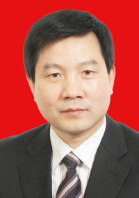

徐启方简历
徐启方，男，汉族，1965年8月出生，陕西汉滨人，1986年7月参加工作，1986年7月加入中国共产党，中央党校在职研究生学历，现任安康市委常委，市政府常务副市长、党组副书记。

-
1984.09—1986.07 陕西商业专科学校物价专业学习
-
1986.07—1989.08 安康地区物价局综合科办事员
-
1989.08—1992.05 安康地区物价局办公室副主任（其间：1986.09—1989.12在陕西财经学院价格学专业学习）
-
1992.05—1994.12 安康地区物价局党组成员、办公室主任兼价格事务所所长
-
1994.12—1995.10 安康地区商贸局党委委员、副局长
-
1995.10—1997.11 安康地区商业局党委委员、副局长（其间：1996.09—1996.11在陕西省委党校青处班学习；1994.08—1996.12在中央党校函授学院本科班经济管理专业学习）
-
1997.11—1999.07 汉阴县委常委，县政府常务副县长
-
1999.07—2001.11 汉阴县委副书记，县政府代县长、县长（其间：1999.02—2000.07在陕西财经学院工商学院工商管理研究生班学习）
-
2001.11—2002.12 石泉县委副书记，县政府代县长、县长
-
2002.12—2005.11 石泉县委书记（其间：2003.09—2004.01在中央党校县委书记班学习）
-
2005.11—2006.01 安康市委常委，石泉县委书记（其间：2004.03—2006.01在中央党校导师制研究生班经济学（经济管理）专业学习）
-
2006.01—2006.02 安康市委常委、秘书长，石泉县委书记
-
2006.02—2010.03 安康市委常委、秘书长（其间：2009.02—2010.01在中央党校第九期中青班学习）
-
2010.03— 安康市委常委，市政府常务副市长、党组副书记
-
省十届人大代表，市第一次、二次党代会代表，市一届、二届、三届人大代表。
Go back to 首页Update:datetime=2011/08/15 11:14:52